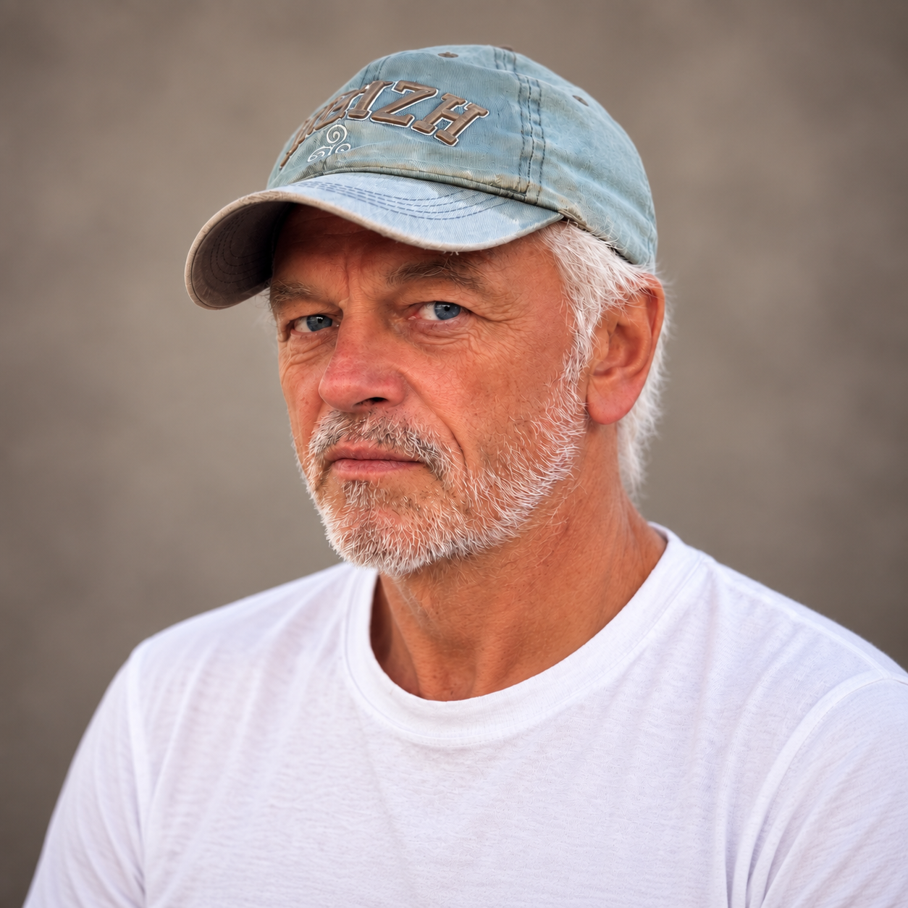
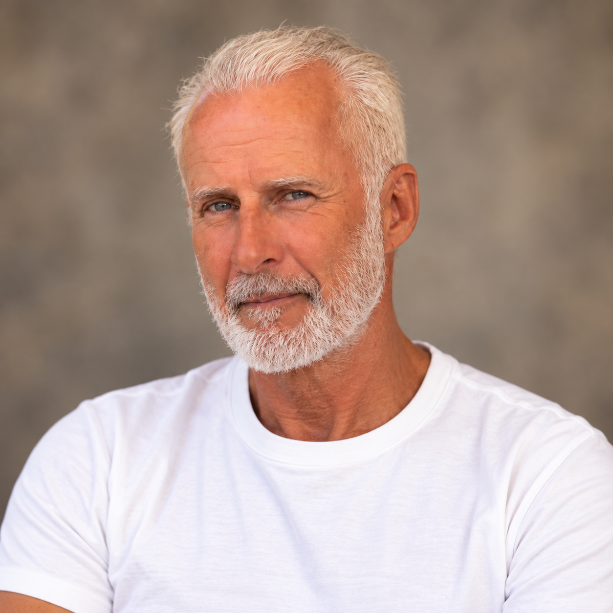
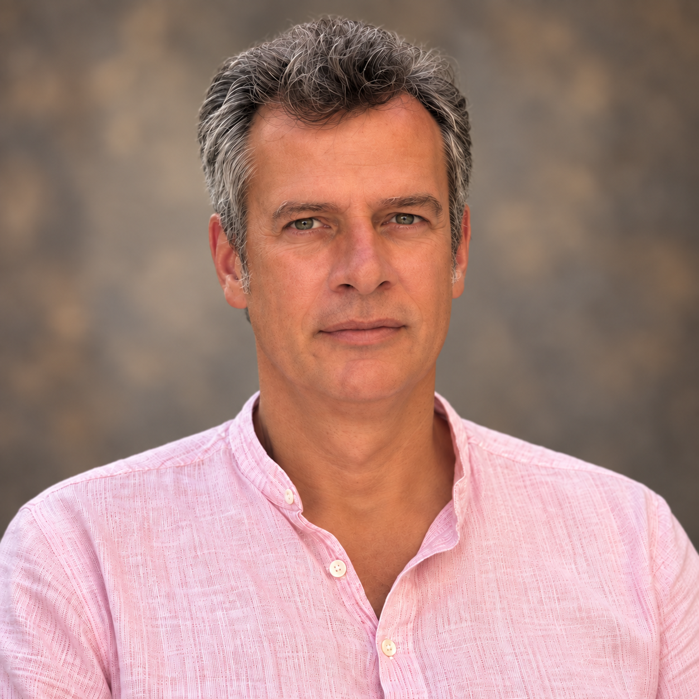
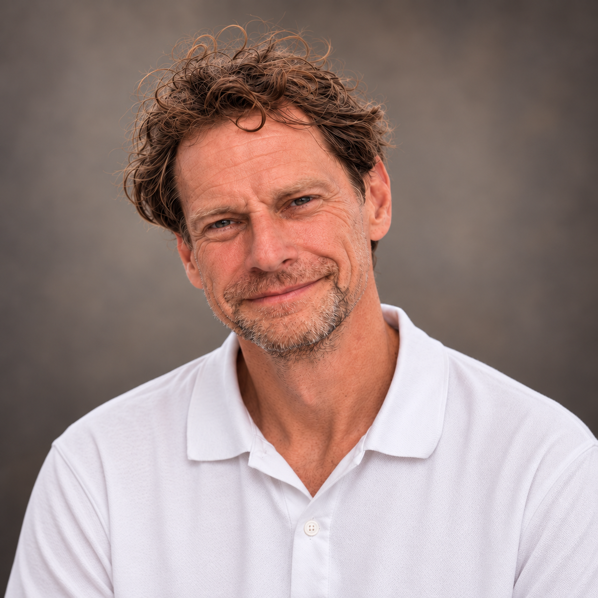
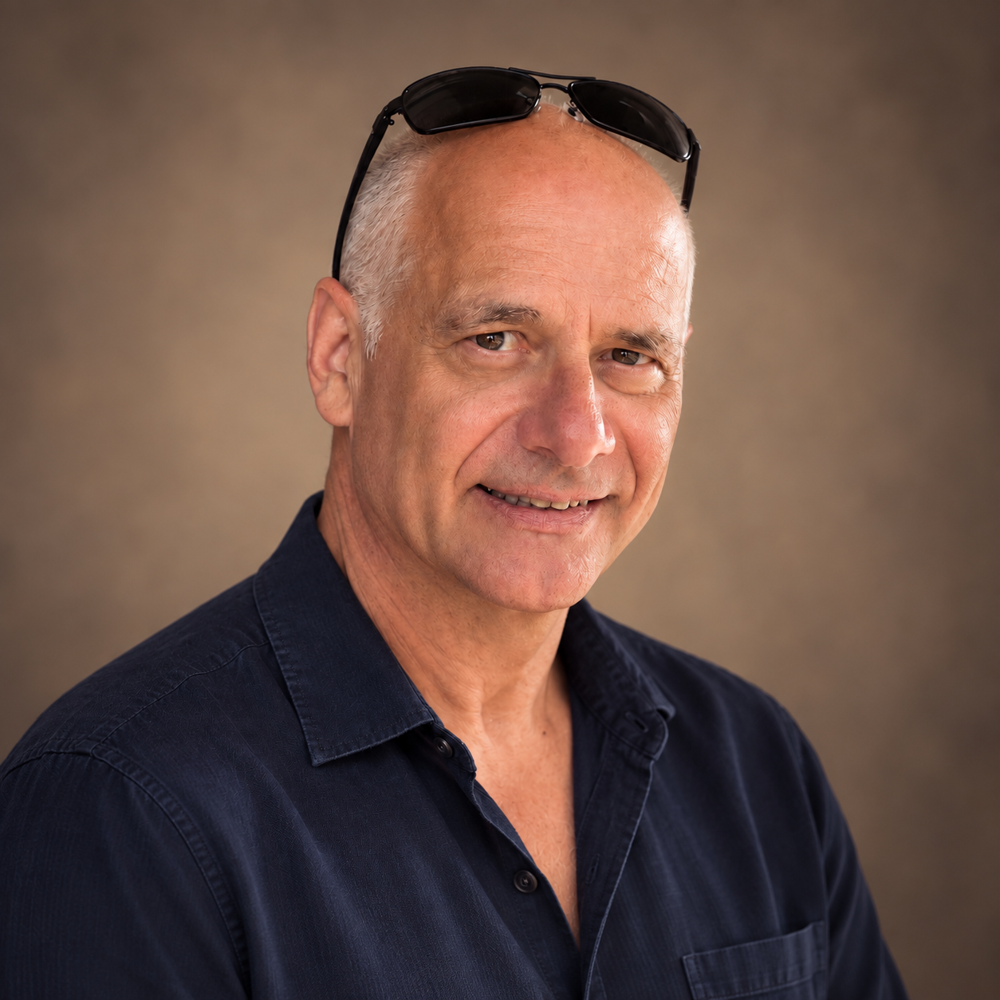
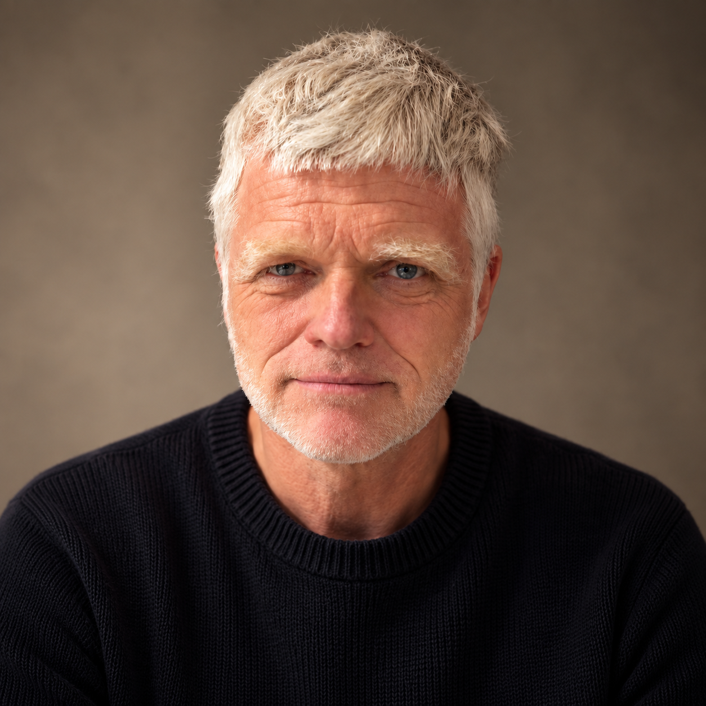
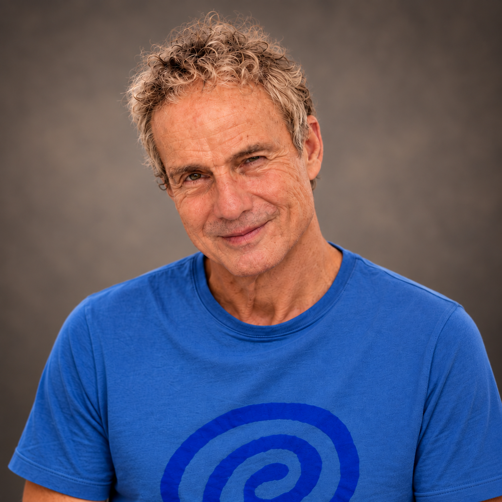
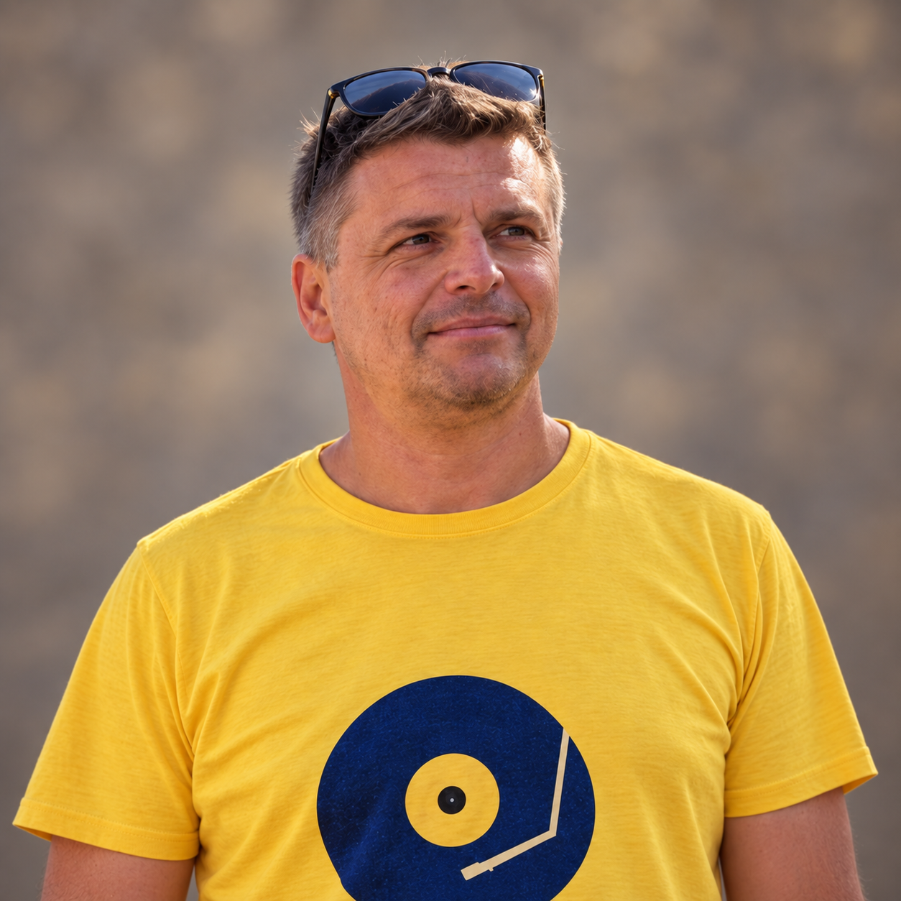

SHI auf Tour · 6.–19. September 2026
Bulgarien
2026
Von Sofia über die Gipfel des Pirin bis ans Schwarze Meer. Vierzehn Tage, fünf Etappen und 204 Bilder.
Team & Reise ansehenDie Reisegruppe
Team Bulgarien
Elf Köpfe, fünf Etappen und eine gemeinsame Reise von Sofia bis ans Schwarze Meer.








Die Reise